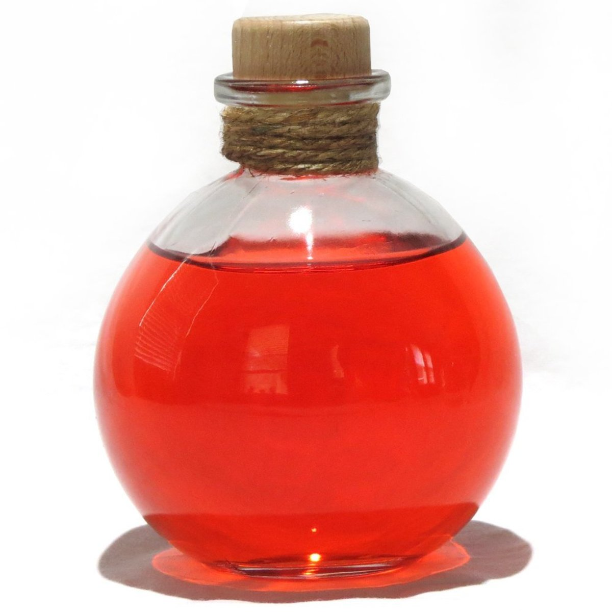

Cure Disease

This potion cures all diseases.
Effect will also cure Sanguinare Vampiris, but only within the first three days after infection.
Ingredients (need to mix just 2):
- Mudcrab Chitin
- Vampire Dust
- Hawk Feathers
- Charred Skeever Hide
Steps:
- Grind your ingredients
- Add strong alcohol to cauldron and boil
- Add ingredients to cauldron
- Allow the cauldron to cool.
- Distill in phial when finished.
Go to main page